Product card
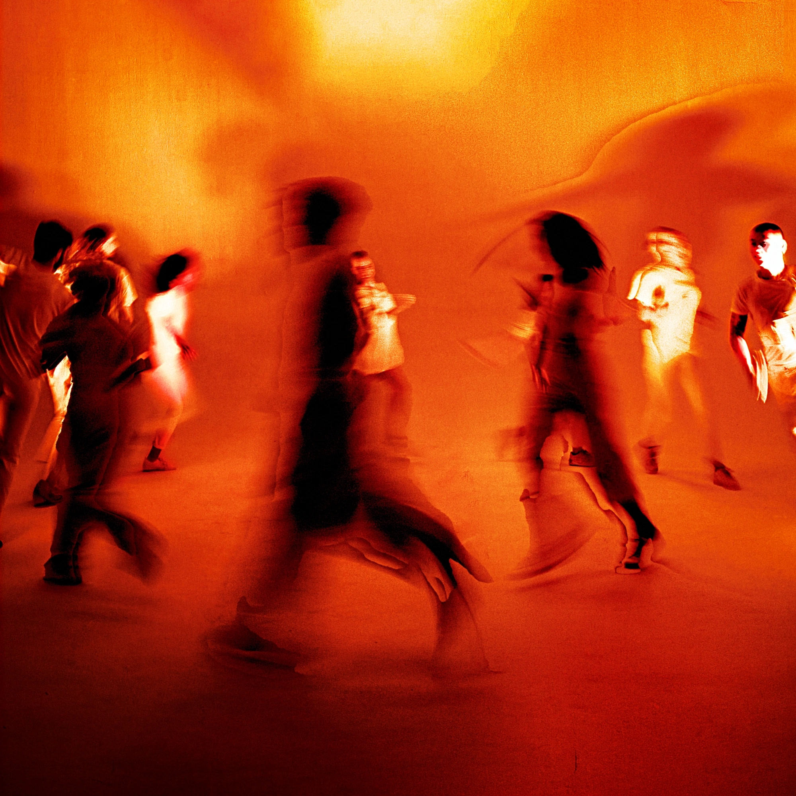
Afterglow
$180

Afterglow
One fragrance in four stages, from the last of the sun until it is dark.
There is no drawn logotype. The wordmark is Instrument Serif, widened to 150%.
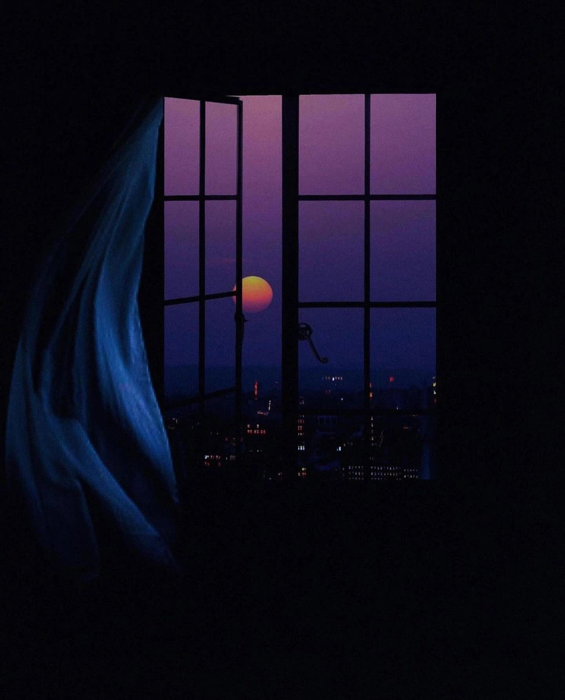
Instrument Serif 400 at 150% width, tracking 0. Clear space is the cap height of the A on every side. Minimum 96 px on screen, 24 mm in print.
On black
#EEECEA, the default. Gold of last light also passes.
On gold
#080808 only. Nothing light sits on gold.
On rose
#EEECEA. Gold and #C0C0C0 pass at wordmark size.
On deep violet
#EEECEA or gold of last light.
On the fall
#EEECEA at full size, over after gold or deeper.
The brand’s four colours, called stages, run from sunset into night, each darker than the last at the same intensity. In order, falling to black and ending on a sliver of magenta, they make the fall, the brand’s gradient. Build it from these values, never by eye.

Gold to violet. Never reversed.
Gold of last light
#D8B260 · L 0.781
Text, logo, lines
After gold
#BC6F4C · L 0.619
Text, logo, lines
Rose
#893A50 · L 0.461
Backgrounds only
Deep violet
#341D5E · L 0.301
Backgrounds only
Ground
#080808 · L 0.134
Surface, recessed
#141414 · L 0.191
Surface, raised
#2B2B2B · L 0.289
Muted
#C0C0C0 · L 0.808
Text
#EEECEA · L 0.944
Borders are a hairline of #C0C0C0 at 22% opacity. A stage colour never stands in for a neutral, and a neutral never stands in for a stage.
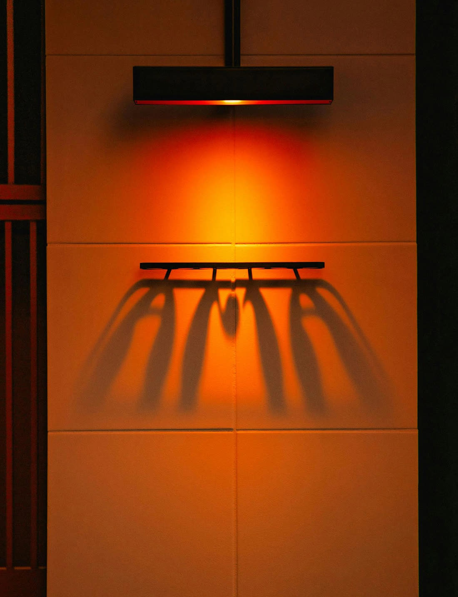
Art direction
One light source, and it is falling.
The palette describes light at one hour of one evening. Shoot to match it; never grade toward it afterwards.
Across a set, warm to cool, never back
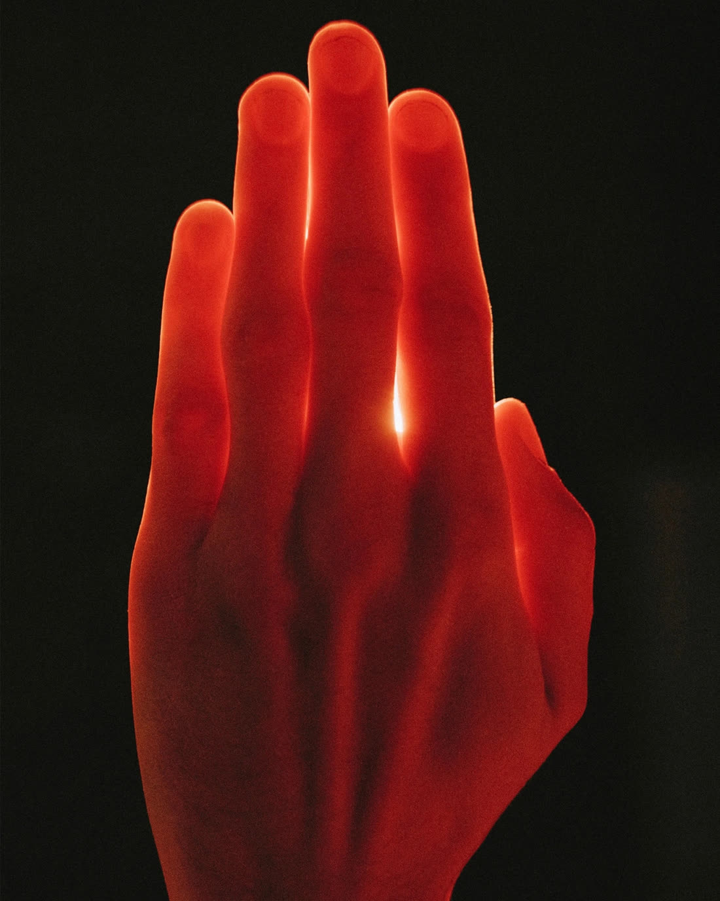

Instrument Serif for headings and the wordmark, Space Grotesk for everything else. Both are free in Shopify’s font library. Each size is 1.25 times the one below it.
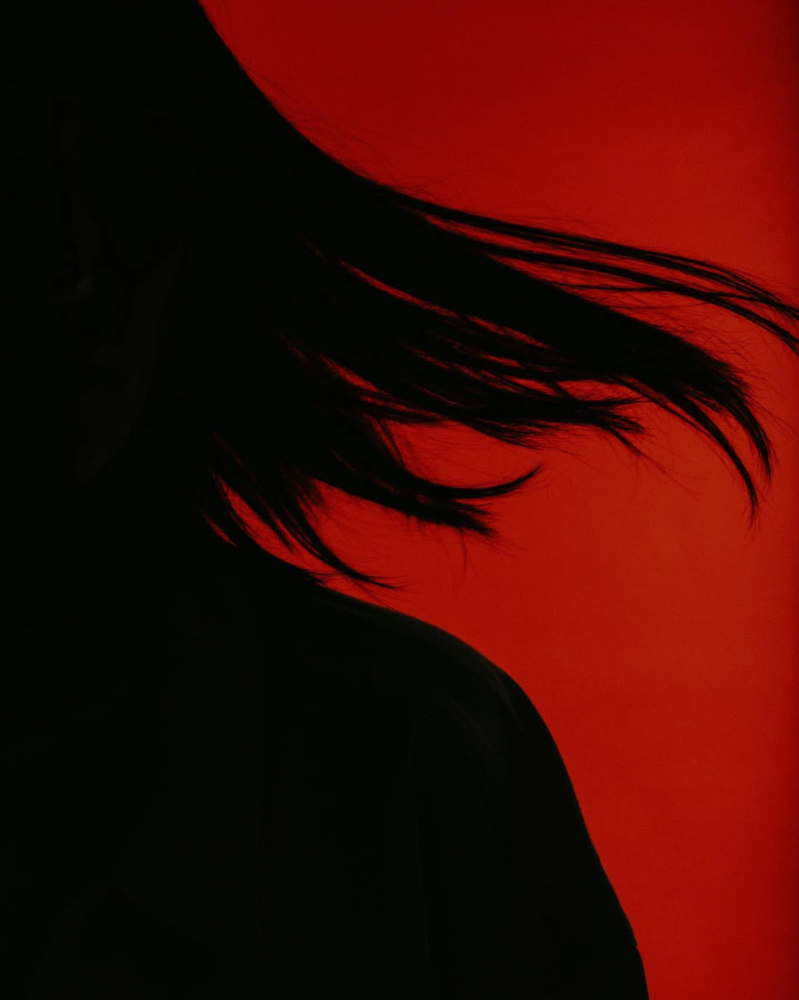
Display · Instrument Serif 400 · headings and the wordmark
Afterglow
Body · Space Grotesk 400 · everything else
The light only ever deepens.
| Role | Screen | Leading | Tracking | |
|---|---|---|---|---|
| Display | 39.06–61.04 px | 36–72 pt | 1.02 | −0.015 em |
| Heading | 31.25 px | 18–24 pt | 1.1 | −0.01 em |
| Body | 16 px | 9.5–11 pt | 1.55 | 0 |
| Caption | 12.8 px | 7–8 pt | 1.45 | 0.08 em |
| Label | 12.8 px uppercase | 7 pt uppercase | 1.3 | 0.12 em |
Twelve columns on screen and in print. Every space is one of eight steps from 4 to 64 px.
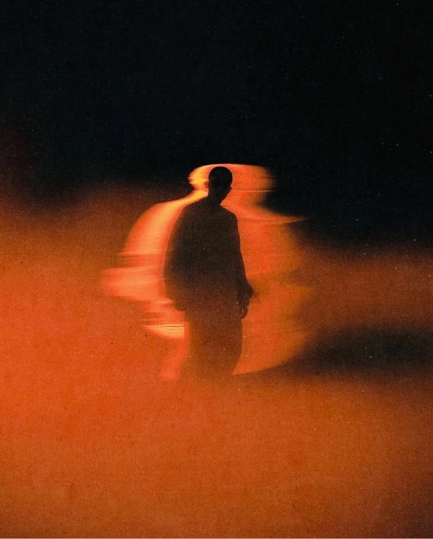
The one rule
The light only brightens where the ember is.
Everywhere else it only deepens. Hover, focus and active states darken, never lighten. In print and film, no panel or frame is lighter than the one before it. In code, no state is lighter than its resting state, so a developer can check it.
Radius
0
Square corners on everything.
Shadow
none
Depth comes from the two surface colours, never from a shadow.
Motion
450 ms
Eases in and out and stops where it lands, with no bounce. cubic-bezier(0.2, 0, 0.2, 1).

19:12
#D8B260 · L 0.781
The last direct sun: warm, low and close to the skin. A set opens here.

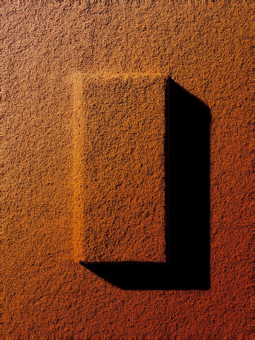
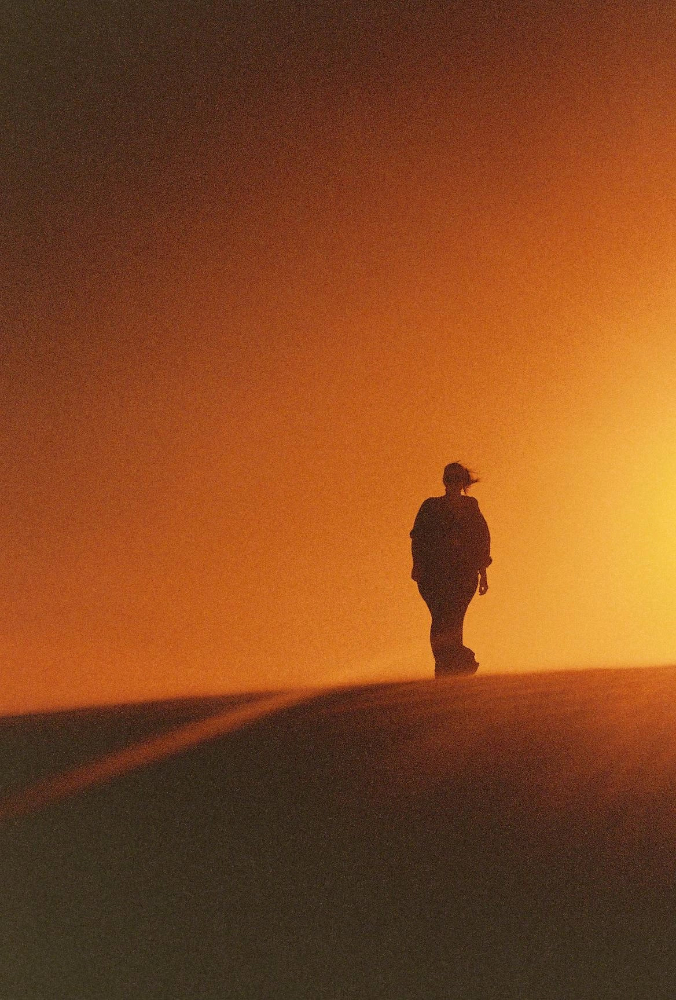
19:40
#BC6F4C · L 0.619
Copper and terracotta just after the sun drops. Skin, walls and sand still hold the heat.
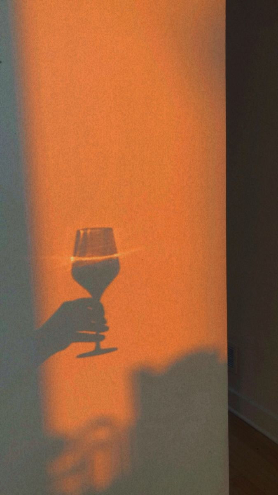
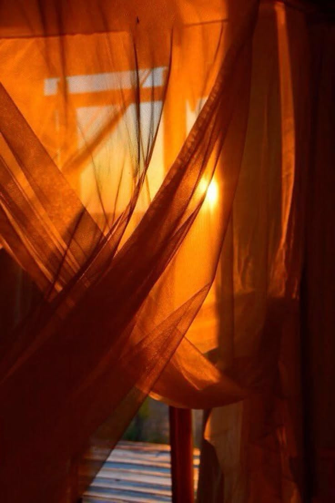


20:15
#893A50 · L 0.461
Wine-rose as the warmth fades, the light bouncing off walls and skin.
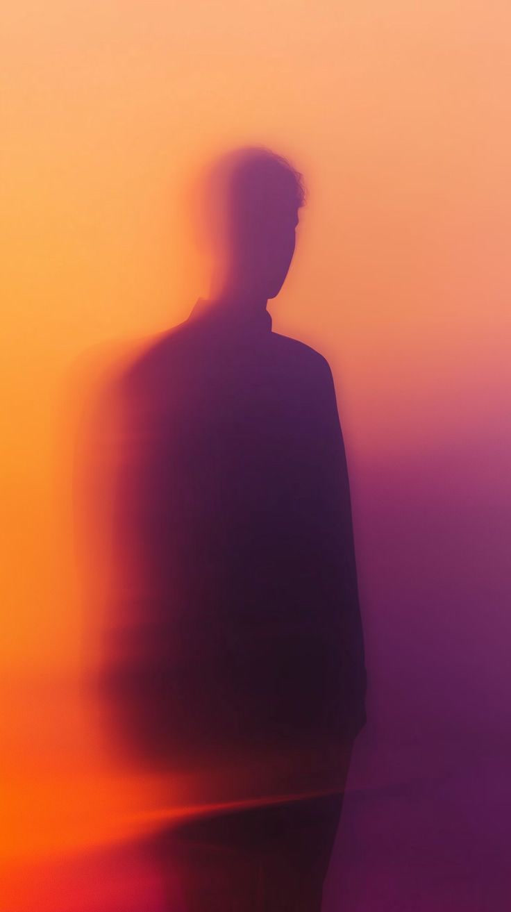
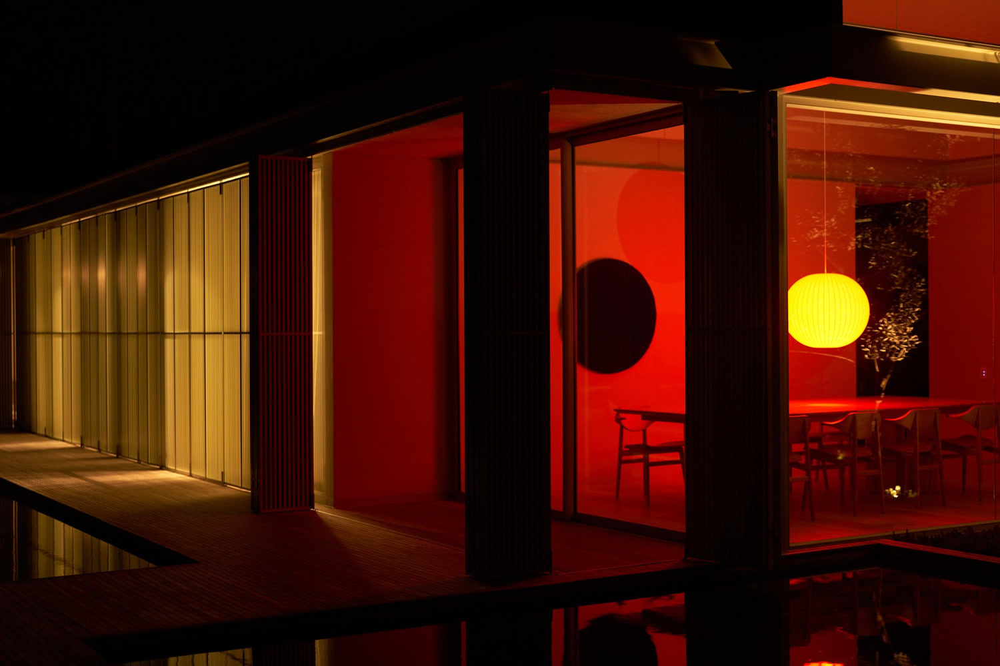
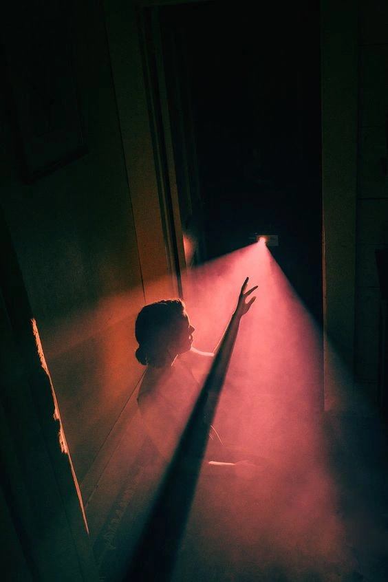
21:30
#341D5E · L 0.301
Blue-violet night with one warm source at most. A set ends here.


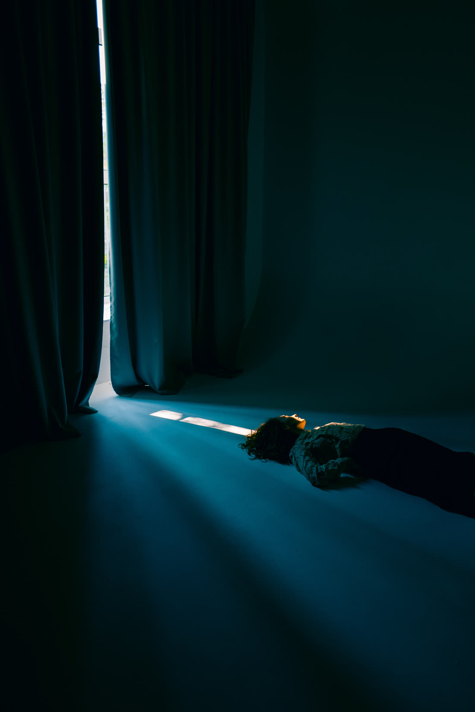
The one accent of contrast. It follows the cursor in the colour of the page beneath it, and goes out when the cursor stops.
Type, panels, colour and photographs catch its light on the side facing it. Nothing is cast.
Never a shadow, a dark pattern, a piece that breaks off, a stepped edge, or a page that needs it to render.
Afterglow
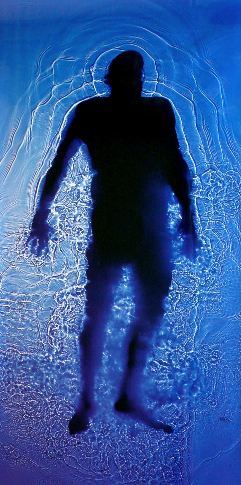
Don’tFive rules from the art direction, each shown right and wrong. The full rules are on page 17. The tiles are diagrams. The photograph is a real frame rejected from the set.
One source
One low, warm source. Not a second light.
Light that falls
Light rakes across and falls away. Not flat and even.
Brightness limit
The brightest quarter stops at gold. Not white highlights.
Graded to the stages
Shadows and highlights land on stage colours. Not on grey.
Exposed at capture
Shadows stay deep, exposed right in camera. Not lifted in post.
What a storefront is mostly made of. Press notes are on page 18.
Product card

Afterglow
$180
Card, 85 × 55 mm
Label face
Poster, 2:3
Voice
Unhurried and physical. It names heat, light, breath and skin.
It describes a sequence, because the product is a sequence. Certain without pushing: the brand does not argue for itself, and assumes you will understand it if you are shown it in the right order.
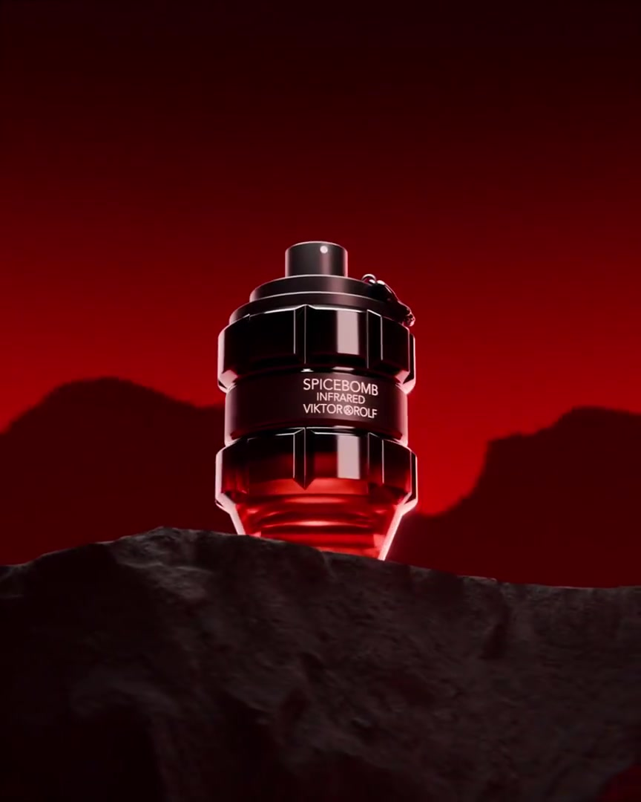
Chroma is flat at 0.110 on every stage. The ember is the one exception, an accent of contrast that raises the chroma of the colour it sits on.
Each ratio is the contrast against that background. Body text needs 4.5:1 and large text 3:1. CMYK is for proofing only. Pantone matches will be added after the first print proof.
| Measure | Screen | |
|---|---|---|
| Columns | 12 | 12 |
| Gutter | 24 px | 4 mm |
| Margin | 32–64 px | 12 mm |
| Baseline | 8 px | 4 mm |
| Max measure | 58 ch | 58 ch |
One light source, and it is falling.
Images are made between 19:12 and 21:30, or lit to look as though they were.
No more than a quarter of an image is brighter than gold of last light, L 0.781.
Check it on the file: in a lightness histogram, the brightest quarter sits at or below L 0.781.
Warm to cool across a set, never back.
In a set, each image runs cooler than the one before it, gold first and violet last.
Grade toward the stages rather than to neutral.
Shadows and highlights land on the stage colours, not on grey.
Nothing is brightened in post.
Exposure is set in camera. A frame that needs lifting afterwards is not used.
Recolour
Only in the colour pairs that pass on page 15.
Narrow it
Always 150% wide. Never the face’s own width, never wider.
Outline
No stroke, shadow or glow.
Stack
One line. The word never breaks.
Substitute
No other typeface. If the font is missing, place it as an image.
Button, rest and hover
On hover the button darkens, from L 0.781 to 0.630. It never lightens. The light only brightens where the ember is.
Surface steps
Production
Where the rules stop
Product copy uses this voice. Cart, checkout, shipping notices, legal and safety copy are plain and fast. The atmosphere stops there on purpose: on a payment form or a warning label, it would only get in the way.
Elsewhere
The full voice guide, with word lists and the tone for each page, is a separate document available from the brand owner: voice-tone.md. Art direction for the launch event is in the brief and applies to that night only. Nothing in it binds the brand.